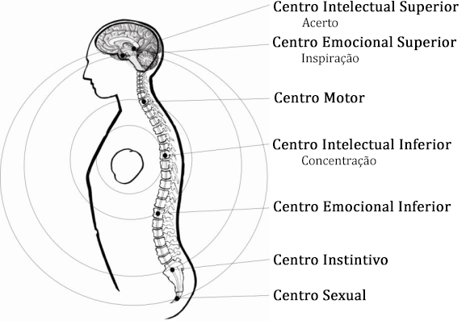

Conferência nº 21
CONCENTRAÇÃO E RELAXAMENTO
O que é a Concentração?
A palavra Concentração nos está mostrando que a Consciência está Centrada na Ação.
A Concentração é um poder muito grande que nos permite ter êxito em tudo o que empreendemos.
A Concentração se dá quando aprendemos a viver o instante. O eterno agora. Quando nossas diferentes funções trabalham em uníssono, tendo como centro nosso coração.
A chave para conseguir qualquer prática é a Concentração. Devemos praticar e lutar até conseguir.
Se durante o dia estivermos concentrados, pela noite continuaremos concentrados. Se durante o dia estivermos distraídos, pela noite também estaremos distraídos.
Existem dois tipos de Concentração: uma no Mundo Interior e a outra no Mundo Exterior. As duas são muito importantes.
Nos encontramos concentrados quando sustentamos apenas um pensamento. Quando sustentamos a atenção plena em algo; poderemos alcançar a Inspiração, e um instante depois, o Acerto.
Concentração é o contrário da Distração. A Concentração é da Consciência, a distração é do Eu. Se estudamos a distração terminaremos em concentração.
Se pudermos descobrir todos os Eus ou elementos distrativos alcançaremos a Concentração.
Aprender a centrar a Consciência na Ação requer muita prática, já que o sentido da Auto-observação Psicológica está atrofiado em quase todos os seres humanos, e por meio deste sentido se centra a Consciência na ação.
O Mestre Jesus nos ensinou que devemos Velar e Orar.
Velar é fazer as coisas desperto, em vigília, em auto-observação, ou concentrado.
Orar é o desejo de Ser ou a Recordação de Si. E isto é o mesmo que relaxar-se. Suplicar a Mãe Divina que elimine o defeito que não nos deixa concentrar.
Como podemos praticar a Concentração:
- Fazendo um esforço para fazer coisa por coisa.
- Sem pensar em nenhuma outra coisa.
- Sem interromper uma coisa para fazer outra.
- Não pensar em coisas que faremos.
- Não recordando coisas que já fizemos.
- Manter-se centrados no que estamos fazendo.
Se observarmos cuidadosamente as múltiplas atividades da nossa vida diária, perceberemos que cada uma delas se faz em forma mecânica, sendo que ao fazê-las estamos pensando em outras coisas. Esse mesmo fato impede que nos mantenhamos centrados, também impede que vejamos os Eus que se manifestam.
Nos despertamos, nos levantamos, caminhamos ao banheiro, despimos, nos barbeamos, nos banhamos, secamos, vestimos, calçamos, arrumamos a cama, desjejuamos, escovamos os dentes, nos despedimos, saímos à rua, etc., etc. Porém não nos auto-observamos de instante em instante, o que quer dizer que temos a consciência dormida por falta de uso. Fazemos as coisas dormidos. E pelo anterior não há autodescobrimento.
Se começarmos a nos auto-observar descobriremos a cada um dos Eus que participam em cada ação, que atuam mecanicamente cometendo erros, nos tencionam, originam preocupações, distraem e impedem a concentração.
Quando começamos a observar tudo isto, nos daremos conta em forma direta do caos em que nos encontramos. E que só podemos ordená-lo mediante o relaxamento permanente.
O que é o Relaxamento?
Quando nos fazemos conscientes de qualquer defeito que está produzindo tensão em qualquer parte da máquina, deveremos necessariamente relaxar-nos para não esgotar energias de forma desnecessária. E isto se faz com a súplica a nossa Mãe Divina assim: "Minha Mãe mata-me este eu".
O que produz tensão?
- Desejos
- Emoções
- Canções psicológicas
- Estados psicológicos equivocados
- Pensamentos
- Preocupações
- Tagarelices interiores
- Lutas entre os distintos eus
Se suplicamos nestes momentos a nossa Mãe Divina particular que elimine o defeito que está produzindo tensão em tal ou qual centro, notaremos que ELA atua imediatamente, relaxando-nos o lugar em que temos observado o Eu.
É necessário compreender por que estamos tensos para que a Mãe atue.
Se produz tensões por muitas razões:
- Fazemos algo que não nos agrada
- Temos medo que algo saia mau
- Queremos fazer algo que nos agrada mais
- O que vamos fazer mais tarde nos preocupa
- O que fizemos antes não ficou bem
- O que fizemos antes nos ficou muito bem
- Não sabemos fazer o que estamos fazendo
- Nos preocupa algo que teremos que fazer
- Estamos distraídos por algo
Como sabemos que já estamos relaxados?
Quando desaparece toda tensão e nossa psicologia se normaliza. Nos sentimos bem. Podemos nos centrar no que estamos fazendo.
Concentração e Relaxamento: Vigiar e Orar.
- Conjuração do Belilim e Círculo Mágico;
- Súplica de assistência ao Pai e a Mãe Divina;
- Relaxamento, observando que todo o corpo esteja cômodo;
- Nos concentramos no coração a escutar e observar o mundo interior;
- A cada detalhezinho observado lhe suplicamos à Mãe que o desintegre;
- Pode-se fazer até conseguir a concentração perfeita.